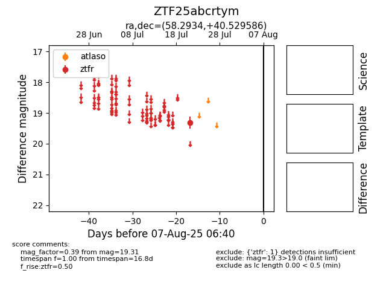

Target ZTF25abcrtym at 2025-08-07 07:30, see:
FINK: fink-portal.org/ZTF25abcrtym
Lasair: lasair-ztf.lsst.ac.uk/objects/ZTF25abcrtym
ALeRCE: alerce.online/object/ZTF25abcrtym
alt names
ZTF25abcrtym (ztf,fink)
coordinates:
equatorial (ra, dec) = (58.2934,+40.52959)
galactic (l, b) = (156.3217,-10.27493)
photometry
last ztfr=19.31
1 ztfr detections
